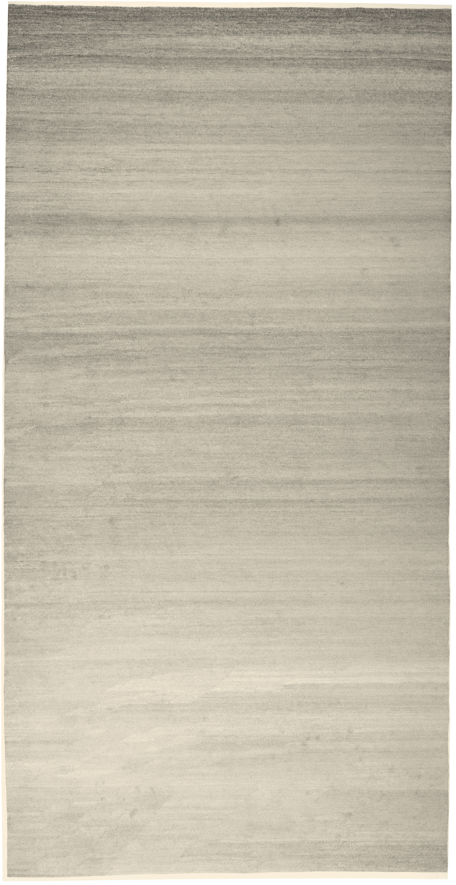
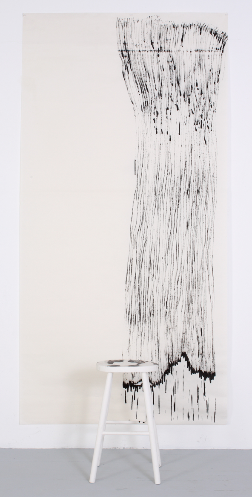

My early practice and rules
This website presents reflective writing on my artistic practice to date. It traces the development of the use of rules and systems in my work over a ten year period and explores the evolution of my practice from my Master's in Fine Art in 2009 to my Master's in Computational Arts in 2019. I will review my past work from my present perspective by referring to examples of my work in a roughly chronological order using images of pieces where possible. I will also present three exercises which set out the early process of transmuting my fine art practice into computation. This website is a parallel autobiography of practice to the research I have undertaken into the practices of Ernest Edmonds, Roman Verostko and Leonel Moura for my essay Systems Art in Computation: The Presence and Absence of the Artist . It has also been inspired by the concept that the artist has privileged access to her or his own creative processes and as such can contribute to knowledge through their own practice-based experience and also through insight gained by the logging and subsequent analysis of practice process and development (Kjorup, pp. 25-26).

×

Part 1 examines my early work and explores the development of the use of rules in my practice. This section also contributed to the definition of Systems art given in Systems Art in Computation . Parts 2, 3, and 4 present a series of exercises intersecting between fine art and computation leading to my work in progress which is set out in Part 5. Part 2, Imitation of Life , presents my first interactive sketches with a programme and the exploration through drawing of the differences between my hand and the computer 'hand'. Part 3, Draw Command , reflects on the translation of the elements of my drawing systems into a programme which subsequently tells me what to sketch. Part 4, Physical System , presents another iteration of my DrawBots which exhibit more sophisticated behaviour, and explores my reaction to the complexity. Part 5 details my work in progress which is the result of my research and each of the exercises.
Ten years ago I was determined to eradicate the artist by constructing systems of rules and decisions to create intuitive distance from the process of making art. The ultimate goal was to eradicate intuition and reduce the number of my decisions down to zero. It took me nearly a decade to articulate and accept what I reluctantly discovered instead; my rules led back to me. The pursuit of the disappearing artist is old fashioned and unachievable, and fails to perceive the potential of systems processes in art. Systems are creative constructions that alter the location and role of the artist and enable new dimensions to creativity, this section will trace my early steps towards this conclusion.

×


×

The immediate foundation to my initial pursuit of the eradication of the artist was in the year prior to my Master's on my Foundation year in art school. In that year, I made intricate, semi-abstract drawings partly based on flowers and partly based on imagination. The forms in my drawings were covered in tiny lines and patterns derived from my inclination to see patterns and shapes with music and conceptual thought. They were highly imaginative and imagined; however, I was designing art and I became dissatisfied fairly rapidly with the lack of conceptual depth. The first drawings I made in my Master's year were frustrated and subconsciously destructive of this way of drawing - I drew splashes of red ink on thin lines; circles destroying forms in near battle; and I ripped and tore my drawings. This destruction continued throughout the Master's year as I broke drawing and my practice, and looked inside.

×

One of the first drawings I made as I began to break my practice was to place the paper on the floor where I usually drew, put a pen in my mouth, and move the pen along the paper from left to right repeatedly. This reversed my previous method of drawing which had depended on a high-level of physical control and concentration to draw a line. The control of my hand was replaced with my mouth, and my visual imagination was displaced by designing an action or scenario, not a result. I discovered that every time I took a breath, the pen moved off the paper and, as I repeated the movement, a drawing appeared. I had not imagined it, I had discovered it. Ten years later I can still remember my amazement. I was immediately hooked on this way of drawing which was logical, destructive and creative, and I have been irretrievably hooked ever since.
Over the next several months I experimented with breaking the lines, control and intuitive imagination of my practice. In so doing, I made more discoveries and I began to construct a definition of drawing. However, certain characteristics of my practice endured. In my Foundation year, my drawing was elemental - black pen lines on white paper. Furthermore, I never planned and I never sketched in pencil. I imagined a drawing in my head, it 'clicked', and I then drew what I saw in my head on paper with very little hesitation. This way of drawing was a combination of decisive spontaneity and commitment. Similarly, as I broke my drawing practice, I came up with an idea, it clicked, and I carried out the idea. I explored black lines on white paper and how to make them by breaking the control of my hand. I experimented with tying my pen on string and swinging it different ways, for example. My attraction to the straightforward irreversibility of ink on paper also continued - paper captures everything, every splash, wobble, and even thoughts. Mistakes could not be covered up or painted over with a layer of paint - drawing was light, it lacked both the weight of paint and canvas, and the heaviness of art history categories and its uncreative analysis and pretension.
Around this time, I started undertaking research for my dissertation which, in turn, began to influence my practice. In particular, I encountered Paul Klee's Pedagogical Sketchbook and the statement (a)n active line on a walk, moving freely, without a goal. A walk for a walk's sake . I was intrigued by the logic, simplicity and playfulness of the idea that a line is a dot that moved. The deceptively simple concept has a whole world of possibilities around it that is still a fundamental aspect of my work today. Around this time I also encountered Wassily Kandinsky, Piet Mondrian and Kazimir Malevich, who collectively contributed to breaking the canvas apart in the early 20th century. I was drawn to the creative logic of the science of art Kandinsky developed with respect to the emotional impact of colour and shapes, as well as Mondrian's idea of a universal system and dynamic equilibrium that he captured in his paintings. The elemental reductionism of Malevich and the Constructivists, and the idea of the construction rather than creation of work, became particularly influential to the development of systems in my practice at the time.
×

As I was undertaking this research, I was also creating a definition of drawing from my experiments in the studio that broke drawing into elements and experimentally reconstructed them. The investigative destruction of my practice was becoming consciously constructive. One day, I spontaneously put ink on my finger and moved my hand from left to right across the paper. It resulted in the drawing below(above). Ten years later, I can still remember how beautiful I found it - it was like the mountains or ocean came out of my finger. I was beginning to define drawing as time, tool, material, and the physical position and movement of the artist. For example, time could be durations (nearly a year for one drawing), or intervals of time (three minutes); the movement could be a dotting action from left to right, or repeatedly moving my finger across paper; my physical presence was almost always fixed in one place standing on a stool, in the middle of the paper, or curled up on the floor; and, my hand might be used, or a pen. Each drawing experiment generated new ideas, more elements, and a deeper definition.

×


×

Through my studio work, I found that the beginning and end of my systems were really important points. I could not reduce my input at the start of the system beyond the elements and rules I chose, otherwise no art would exist. However, with comparative ease, I could strategise the end of the work away from aesthetic or intuitive choices by using time, or the dimension of the paper to determine when the work was done. In 3 Minutes to Nothing, for example, I timed intervals to dot a pen from the left edge to the right edge of a piece of paper. The intervals started at three minutes and reduced by ten seconds with each new row. This dealt with the beginning and end points, however, I found that as I made the piece I invented new rules to adapt myself to the system I had made. For example, without deciding it beforehand, I was evenly spacing the marks across each row of the drawing. This meant that the work became about prediction. At the time I did not recognise it, however, adaptive, spontaneous decision-making whilst a piece is being made has become an aspect of the use of systems in my practice. It is not, necessarily, an intentional aspect of my systems work, but rather, because I am often taking an experimental approach, I find I have left out some defining rules to make a piece. It is also related to the fact that I was then, and remain still, a physical presence in the making of my work. The system structures my physical interaction with the paper or canvas which means that the possibility of interpretation, or even rebellion from the system, is open. Looking back, by treating myself as a physical presence rather than an intuitive presence in my work, I was programming myself like I might one of my DrawBots. This aspect of my practice also serves to highlight that whilst my systems were intended to reduce or eliminate intuition they actually also controlled and refined spontaneity, or creativity, and certainly did not eliminate intuition.

×

As I neared the end of my Master's in Fine Art, my practice split into two broad directions - conceptual systems and visual systems. The visual systems were produced on MDF board (I had no money and a healthy estimation of my strength) and I call them the Board Works. The Board Works took my conceptual systems and turned them into visual targets. I often used balloons filled with paint, or threw paint in some way at a system I had drawn onto a piece of board. The end point was decided before I began, for example, I might have to hit the centre of each circle before stopping, or cover the edge of a circle, or throw six times. These works expanded on the idea that I, as the artist, was a physical element of the system. They also began to visually articulate the opposites that arise when working with systems - aesthetically the rule of the clearly defined shape contrasted with the apparent spontaneity of the splash of paint. At the time, I seriously questioned whether I should draw the system with my hand or using tools. In the end, I usually compromised by spontaneously lifting items from my studio floor to draw around. With hindsight, I was beginning to subconsciously recognise the idea that my systems came entirely from myself and I saw measuring tools as something external to myself and the system. In some ways, this is one of the questions that led me to computational art as the algorithms I make can make the visual system that I interact with and that does not feel external in the way a ruler or compass would.

×

I ended my Master's with a very visually diverse practice which moved between tightly controlled marks, and large, free-seeming gestures all generated from the idea of rules and elements. My work moved conceptually and visually between the opposites of control and spontaneity, intention and mistakes, and freedom and restriction. However, in the years after my Master's, I became troubled by an inherent contradiction in my practice that I had been aware of but not willing to acknowledge yet. My personality, instincts, and intuition were everywhere in my work, my presence was not merely physical. I chose my touch over a paintbrush; paper not canvas; ink rather than paint. I chose to logically and creatively destroy, not to create expressively or to design imaginatively. Even the white space with black ink showed the influence of the art I grew up with in Hong Kong or, perhaps, even reflected my predilection towards simplicity, logic, and even record-keeping. My art was not the product of a detached practice or distanced artist, I had drawings that I loved more than anything I owned. Ten years later, I still check on them in the studio and worry about them. Furthermore, my physical presence in the systems served to highlight that there was something special about the artist's presence. Every time I touched the paper, I made mistakes. The out of place black mark on 3 Minutes to Nothing was not designed, it was a mistake. I can remember my dismay rapidly turning into delight at this mistake. In addition, I found that I regularly interpreted the rules I made and improvised to fill in aspects of the system I had not considered beforehand. And whenever I touched paper, I could see a world in the movement of the ink, the drops I did not mean to make, and the things that happened that I had not planned for. My systems seemed to make them happen, or highlight they existed. The system was supposed to reduce my intuition or creative presence as the artist and it seemed to be highlighting my importance instead. Despite the fact I operated almost as a physical machine in my systems, I was more than that. My practice was fundamentally contradictory and highly productive and it took me ten years and another degree to acknowledge and then work through that contradiction.

×


×

The work I produced after my degree continued to explore rules-based art. Seriality had been important to my practice during my Master's and continued to be after it because it served to aesthetically structure works that I did not want to intuitively or aesthetically make. I had come to divide seriality between action and visual structure, and in 2012 I produced these works which developed the idea of seriality and visual targets. I dropped paint at paint targets repeatedly, changing the colour of the paint after each cycle. I varied the rules for different pieces, in some works, for example, I dropped paint at the first drops, in others, at the most recent drop. In most pieces, I stopped when a certain mark had been covered up. I found that I created different patterns or formations fo marks based on very simple variations to the rules. I found as I made these works that I became confused sometimes, I would perhaps drop paint twice at the same target, or forget where the original target had been. I produced other works exploring seriality and the variety that is exposed through seriality such as these drawings. I was becoming more confused by my practice, however, and the idea of reducing artistic decisions. Furthermore, the question of why I created what I created inherent in my practice, became an immobilising one rather than a creative one. In a way, I productively reduced art and this artist to confusion.

×


×

Over the years, the knowledge that my practice was contradictory grew. I wanted to reduce or eliminate intuition, and yet, even at the most fundamental level, I would not make a piece unless I felt the internal ‘click’ that it was right. I can only describe it as my head goes into focus and I just know it is right and then I will not stop until I make it. That is not remotely detached; that is creativity, intuition, the mistakes, drops of ink I did not plan, the art. In fact, despite all my effort, it is no different to when I was imagining drawings during my Foundation year.
|